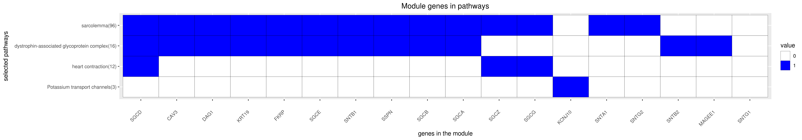

Back to main page
DREAM Module Identification Challenge – Consensus modules
PPI-STRING_Consensus_mod190
| Assigned name |
NA |
| Network |
PPI-STRING |
| Module ID |
PPI-STRING_Consensus_mod190 |
| Module size |
18 genes |
|
Module genes
This module comprises the following genes:
| Gene ID |
Gene Symbol |
Gene Name |
| 859
|
CAV3
|
caveolin 3
|
| 114489
|
DAG1
|
dystroglycan 1
|
| 79147
|
FKRP
|
fukutin related protein
|
| 3766
|
KCNJ10
|
potassium voltage-gated channel subfamily J member 10
|
| 3880
|
KRT19
|
keratin 19
|
| 51438
|
MAGEE1
|
MAGE family member C2
|
| 6442
|
SGCA
|
sarcoglycan alpha
|
| 6443
|
SGCB
|
sarcoglycan beta
|
| 6444
|
SGCD
|
sarcoglycan delta
|
| 8910
|
SGCE
|
sarcoglycan epsilon
|
| 6445
|
SGCG
|
sarcoglycan gamma
|
| 137868
|
SGCZ
|
sarcoglycan zeta
|
| 6640
|
SNTA1
|
syntrophin alpha 1
|
| 6641
|
SNTB1
|
syntrophin beta 1
|
| 6645
|
SNTB2
|
syntrophin beta 2
|
| 54212
|
SNTG1
|
syntrophin gamma 1
|
| 54221
|
SNTG2
|
syntrophin gamma 2
|
| 8082
|
SSPN
|
sarcospan
|
|
Functional annotation
Modules were tested for enrichment in functional and pathway annotations using two complementary approaches:
1. To select a small number of specific / non-redundant annotations for each module, a regression-based approach was used;
2. To obtain the complete set of enriched annotations, an extension of Fisher’s exact test that takes annotation bias into account was employed (Wallenius’ non-central hypergeometric distribution).
Most specific annotations for this module
1Regression coefficient
2Fisher’s exact test nominal P-value
3Annotation source (Reactome, GO biological process (BP), molecular function (MF) and cellular component (CC))
4GO category or Reactome pathway
5High-level branch of annotation tree
Gene membership

All enriched annotations
Gene Ontology
11Nominal enrichment p-value (Wallenius’ noncentral hypergeometric distribution)
2FDR corrected p-value (Benjamini-Hochberg)
Reactome
| P-value1 |
FDR2 |
Term |
| 1.54e-02
|
1e+00
|
INHIBITION OF VOLTAGE GATED CA2 CHANNELS VIA GBETA GAMMA SUBUNITS
|
| 1.71e-02
|
1e+00
|
GABA B RECEPTOR ACTIVATION
|
| 2.23e-02
|
1e+00
|
INWARDLY RECTIFYING K CHANNELS
|
| 2.39e-02
|
1e+00
|
GABA RECEPTOR ACTIVATION
|
|
11Nominal enrichment p-value (Wallenius’ noncentral hypergeometric distribution)
2FDR corrected p-value (Benjamini-Hochberg)
Mouse mutant phenotypes
11Nominal enrichment p-value (Wallenius’ noncentral hypergeometric distribution)
2FDR corrected p-value (Benjamini-Hochberg)
Generated on: Thu Aug 30 17:29:11 2018 - R2HTML